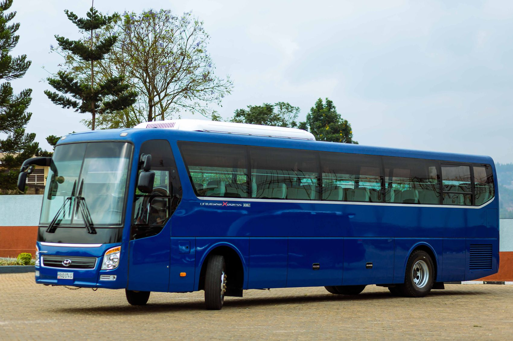
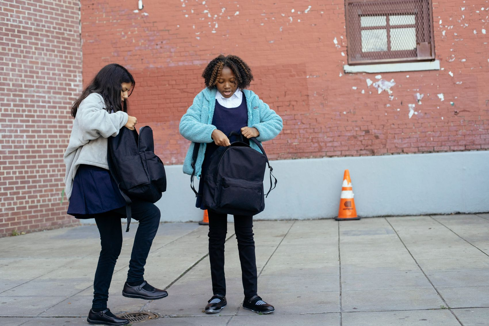
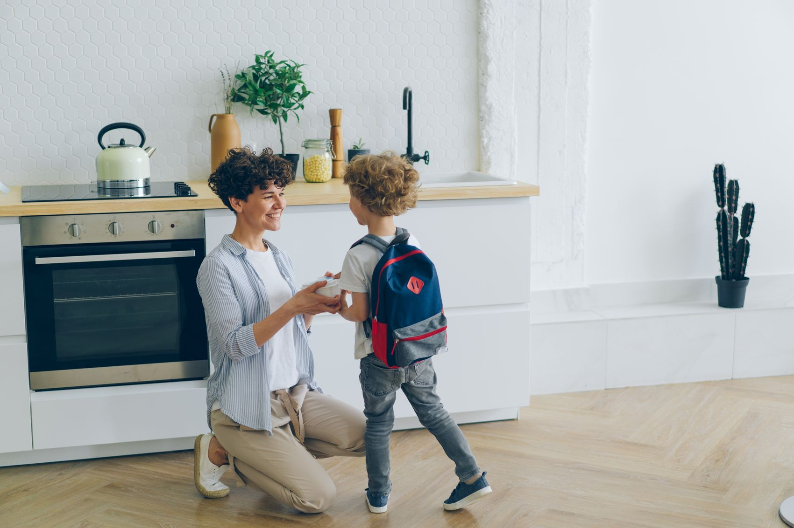

Make the daily journey
easier to trust.
Bring planning, care and communication together so families can approach the school run with more clarity and less uncertainty.
ABOUT LITTLEROUTE
School transport is part of a child’s everyday world. We believe that world should feel familiar, considered, and connected.
A little about our approach

Little journeys.THE IDEA BEHIND THE JOURNEY
A familiar routine for children. Clear, practical information for the adults around them.
It’s the bag packed the night before. The familiar face at the bus stop. The moment you know they’ve arrived and your morning can carry on.
LittleRoute is a school transport concept shaped around those everyday moments. Our approach brings clear routes, practical information, and parent communication into one considered experience.
WHAT POINTS US IN THE RIGHT DIRECTION
Bring planning, care and communication together so families can approach the school run with more clarity and less uncertainty.
A school transport experience where children feel supported, parents feel informed, and the journey becomes a reassuring part of the routine.
OUR CARE JOURNEY
A simple way to look at the school run: understand the family, plan carefully, travel considerately and stay connected.
Understand the school, the neighbourhood and the family’s daily rhythm.
Make stops, timings and travel arrangements clear before the first pickup.
Support a familiar boarding routine and a considered handover.
Keep relevant journey, attendance and fee information within reach.
THE PEOPLE AROUND THE JOURNEY
Parents, schools and transport teams each have a part to play. Clear information and agreed routines help those parts work together.
Read the safety approachDrivers and attendants who understand the route, the routine and their responsibilities.
A focus on preparation, appropriate checks and agreed collection arrangements.
Useful information for parents and a straightforward way to prepare questions.
GET TO KNOW YOUR EVERYDAY JOURNEY
Explore the services and see how the little details fit together.
Discover our services